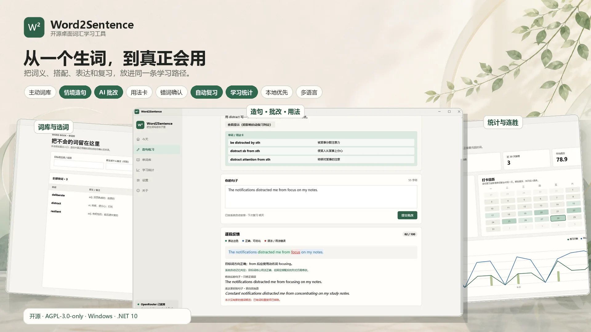
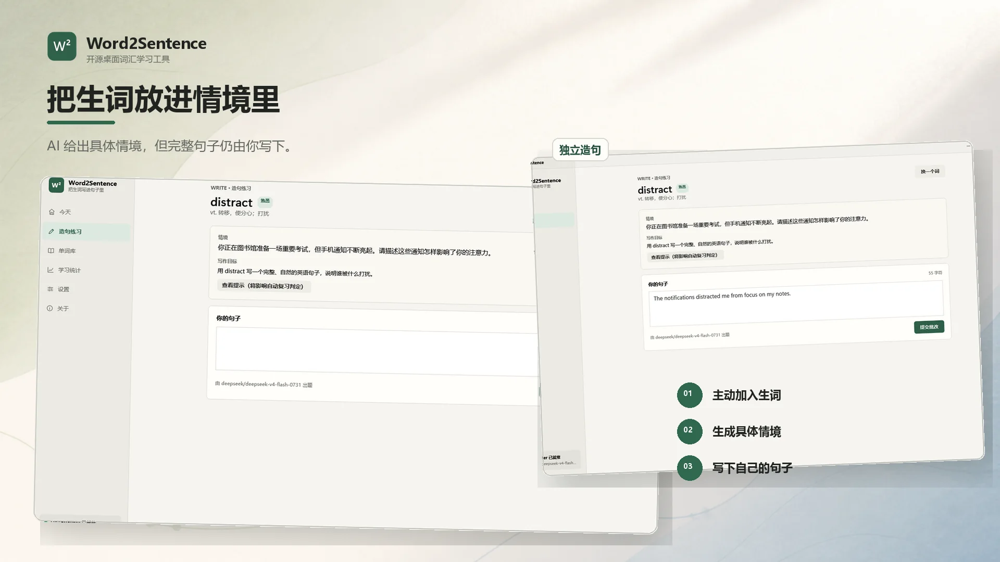
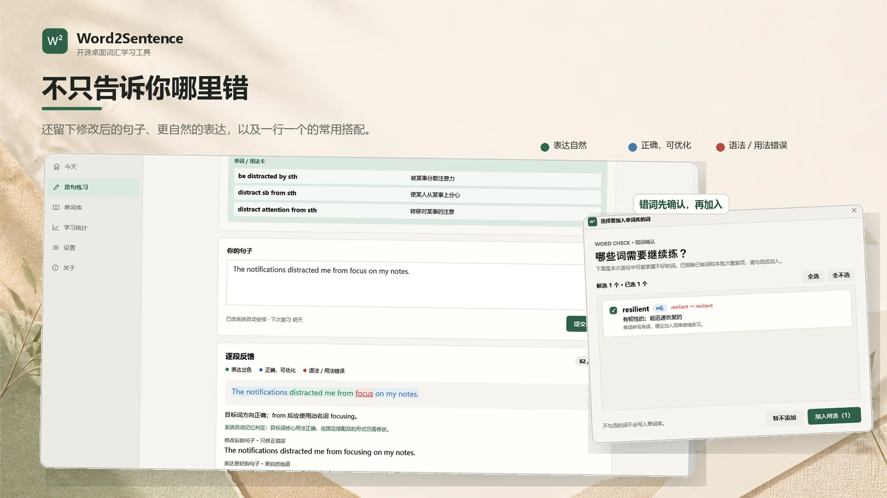
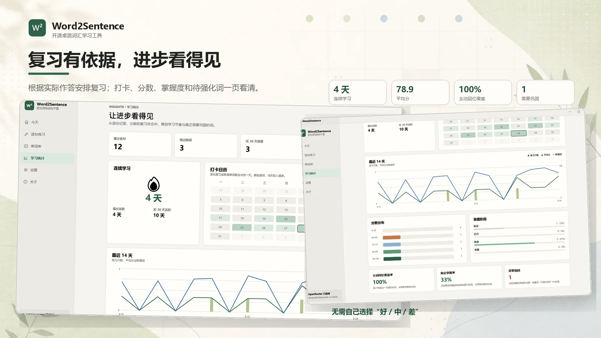

词库、历史、证据和记忆状态默认保存在本机。
没有“好 / 中 / 差”自评按钮，复习等级来自作答证据。
界面语言、目标语言和解释语言可以分别设置。
仓库内置 FSRS、自动评分、情境与统计等一致性检查。
COMMUNITY
已被 awesome-fsrs ↗ 与 awesome-recite-tools ↗ 收录。
01 / THE LEARNING LOOP
释义只是入口，
独立表达才是目标。
Word2Sentence 把一次练习拆成连续闭环。AI 不替你写答案，它负责给出约束明确的情境，并在作答后形成可解释证据。
- 01主动加入生词
学习范围由用户决定，不把整份词库交给模型。
- 02生成具体情境
给出人物、目的和表达要求，提交前隐藏完整示例。
- 03独立写下句子
提示、粘贴、响应时间和修改次数都会被记录。
- 04逐段批改
区分自然、正确但可优化，以及语法或用法错误。
- 05沉淀用法卡
把搭配模式、直接含义与例句拆成可复习单元。
- 06安排下次复习
目标词证据经过本地规则判断，再进入 FSRS-6。

CONTEXT BEFORE ANSWER
先给情境，
再由你完成表达。
练习可以接受系统推荐，也可以从近期候选中主动选择。AI 只提供具体写作任务和可选提示，完整用法卡与示例在提交前保持隐藏。
- 推荐最需要复习的词，或自主选择候选词
- 目标语言、解释语言与界面语言相互独立
- 查看提示会进入证据，影响内部记忆等级

FEEDBACK THAT REMAINS
批改之后，
留下可以继续复习的东西。
整句分数只是写作反馈。更重要的是逐段颜色标注、只修错误的句子、更自然的表达，以及拆开的 2–3 条用法卡。
- 绿色、蓝色和红色分别表达三类反馈
- 错词先去重并补全词性和释义，再由用户确认
- 最近生成的 10 张用法卡回到首页轮播

PROGRESS WITH EVIDENCE
复习有依据，
进步看得见。
统计页把练习节奏、分数与长期记忆状态放在一起：六周打卡日历、连胜、十四天趋势、分数分布、掌握阶段和待强化词都来自本地记录。
- 当前与最长连胜、近 30 天活跃情况
- 主动回忆覆盖率与稳定掌握率
- 分数不足或记忆不稳定的词进入待强化列表

02 / AI EVIDENCE, LOCAL DECISION
模型提供证据，
确定性代码决定是否更新记忆。
整句 0–100 分不会直接决定间隔。调度只读取目标词相关证据，并对置信度、内部一致性和二次复核设置边界。
形成结构化证据
- 目标词是否出现
- 拼写、词义与词形是否正确
- 搭配、局部语法与自然度
- 是否需要核心修正与证据置信度
映射为记忆等级
- 提示或粘贴会阻止“轻松回忆”
- 响应速度只与个人历史基线比较
- 低置信度或冲突证据触发短时复测
- 仅可靠结论进入长期 FSRS 状态
FSRS-6py-fsrs 6.3.1 对齐实现
21发布默认参数
90%目标留存率
1m / 10m学习步骤
0自定义间隔倍率
03 / LOCAL DATA & PRIVACY
完整学习档案，
默认留在你的电脑里。
词库、造句历史、用法卡、AI 证据、行为记录、FSRS 状态和到期时间保存在本地 JSON 文件。API Key 可以从环境变量读取，也可以加密保存到 Windows 凭据管理器。
%LocalAppData%\Word2Sentence\wordbook.json
- 启用 AI 时会发送
- 当前目标词、备注、题目情境与本次提交句子。
- 不会发送
- 完整词库与整个学习历史。
- 离线状态
- 保留基础检查；证据不可靠时不会更新长期记忆。
04 / CURRENT STATUS
核心闭环已经运行，
产品交付仍在继续。
当前仓库提供源码和可重复验证的核心行为。Windows 安装包与正式 Release 尚未发布，现阶段适合开发者从源码运行和参与贡献。
AVAILABLE NOW
已经完成
- 中英双语界面与可配置学习语言
- AI 逐段反馈、两个改写版本和错词确认
- 用法卡、首页轮播与自动 FSRS-6 调度
- JSON 修复、空内容重试和条件式证据复核
- 日历、连胜、趋势、分数和掌握度统计
NEXT
仍在推进
- 导入与导出学习包
- 多义词按具体用法分别维护记忆状态
- 数据充分后的个性化 FSRS 参数
- Windows 安装包与正式 Release
SOURCE & CONTRIBUTION